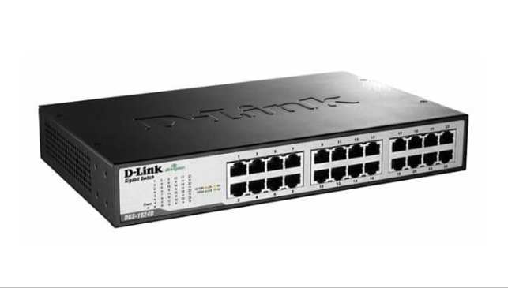

Nama Alat: Switch
Pengertian: Switch adalah perangkat jaringan komputer yang berfungsi untuk menghubungkan beberapa perangkat komputer agar dapat melakukan pertukaran paket (menerima, memproses, dan meneruskan data ke perangkat yang dituju).
Fungsi:
- 1. Switch berfungsi melakukan verifikasi terhadap setiap paket yang didapatkannya, sebelum mengarahkannya ke tempat yang dituju.
- 2. Switch juga berfungsi untuk mengatur paket data yang akan dikirimkan.
- 3. Switch mampu mencegah terjadinya looping (data hanya berputar-putar pada port-port switch) ketika data yang diterima tidak diketahui tujuannya.
Jenis Switch : Unmanaged switch, Managed switch, Smart switch, Enterprise-managed switch.